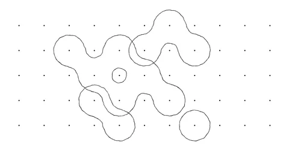
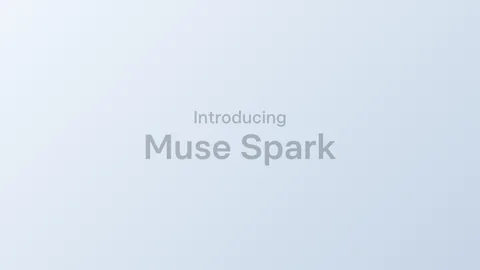
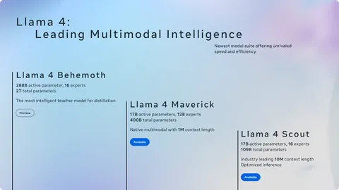
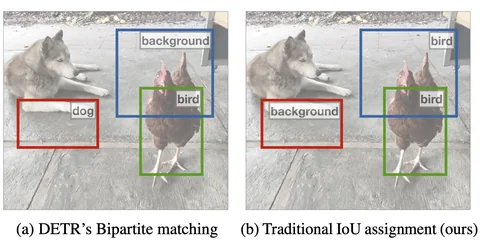

Jang Hyun (Vincent) Cho
Member of Technical Staff · Thinking Machines Lab
I work on multimodal research at Thinking Machines Lab. Previously, I was a Research Scientist at Meta Superintelligence Labs.
I received my Ph.D. in Computer Science from UT Austin, advised by Prof. Philipp Krähenbühl. Before that, I received my B.S. from Cornell University, where I worked with Prof. Bharath Hariharan and Prof. Kavita Bala. Earlier, I also worked at Meta FAIR and NVIDIA.
News
- Released Inkling 2 Mini and Inkling 2 Small with Apache 2.0 open weights at Thinking Machines Lab.
- Muse Wonder was released at Meta Superintelligence Labs.
- I left Meta and joined Thinking Machines Lab as a Member of Technical Staff.
- Muse Spark was released at Meta Superintelligence Labs.
- Perception Encoder was presented as an oral at NeurIPS 2025, and PerceptionLM as a spotlight.
Model Releases

Publications
All on Scholar ↗2026

Perception Encoder: The Best Visual Embeddings Are Not at the Output of the Network
NeurIPS 2025 Oral · *Joint first authors

PerceptionLM: Open-Access Data and Models for Detailed Visual Understanding
NeurIPS 2025 Spotlight · *Joint first authors

The Llama 4 Herd: Architecture, Training, Evaluation, and Deployment Notes
Technical report, 2026
Show 8 moreShow fewer
2025


2024

2023

2022


2021

2019